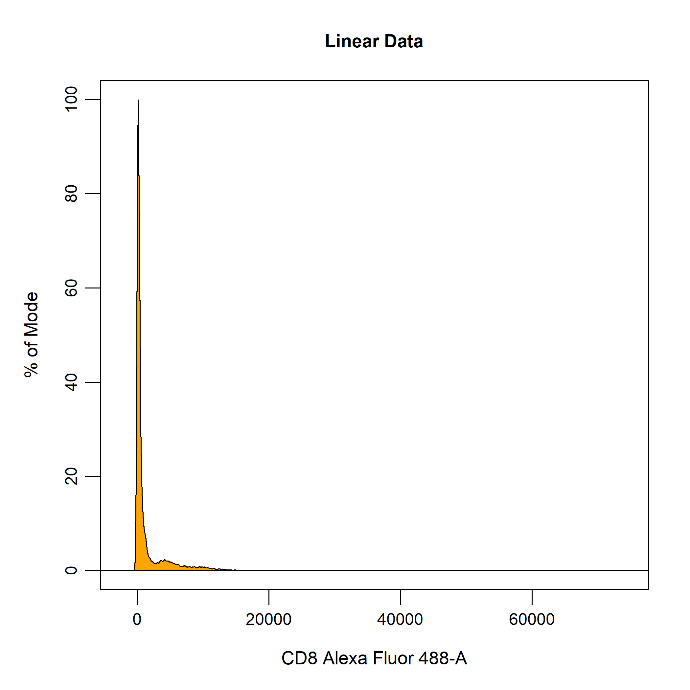
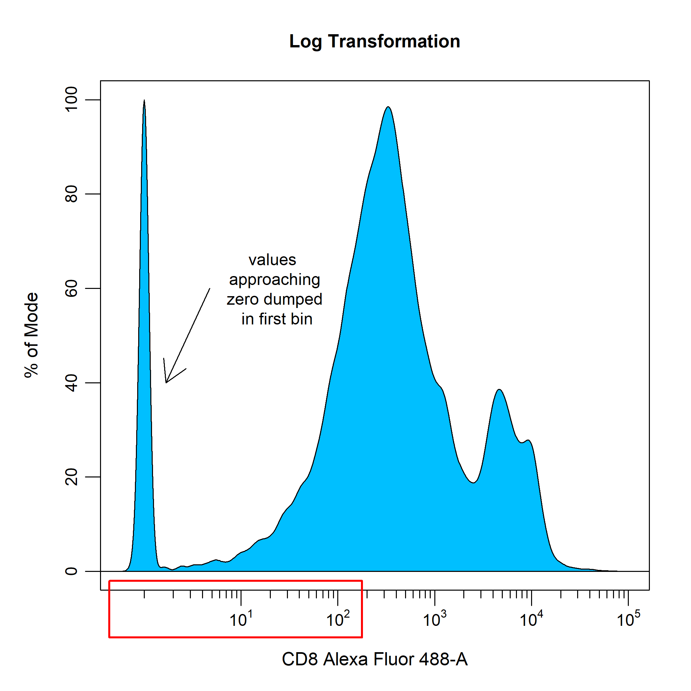
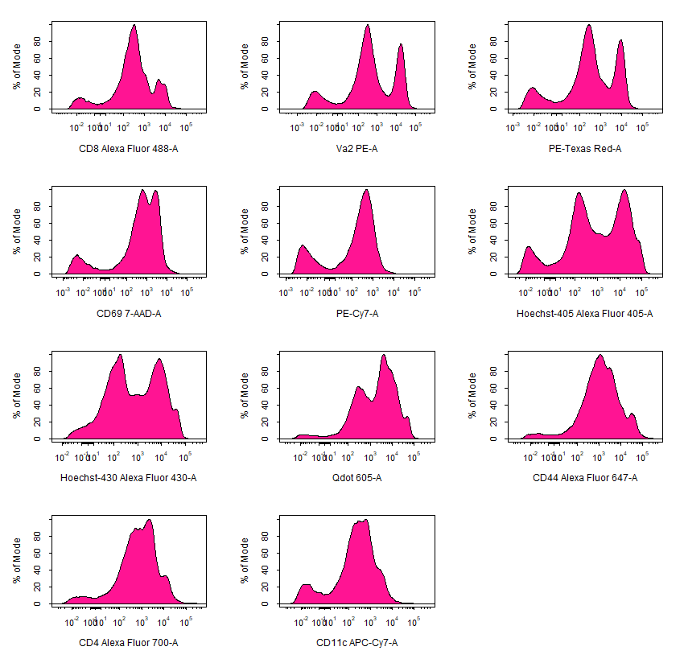
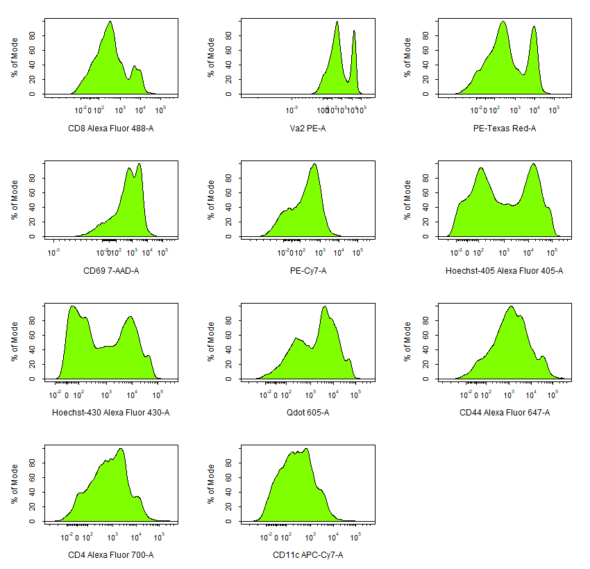
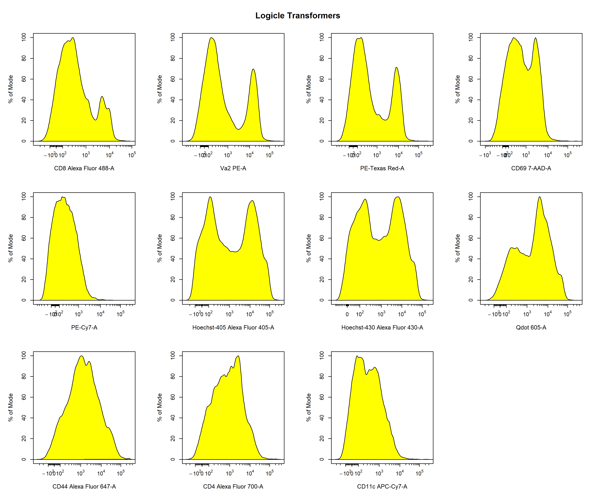
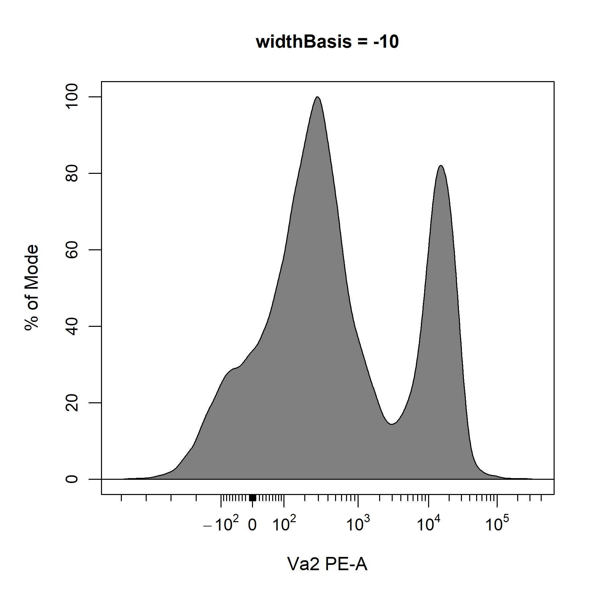
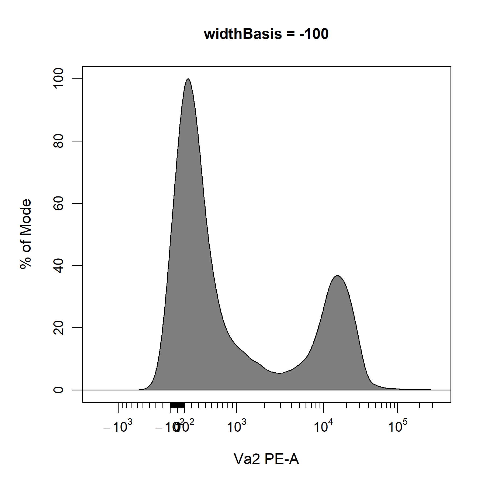
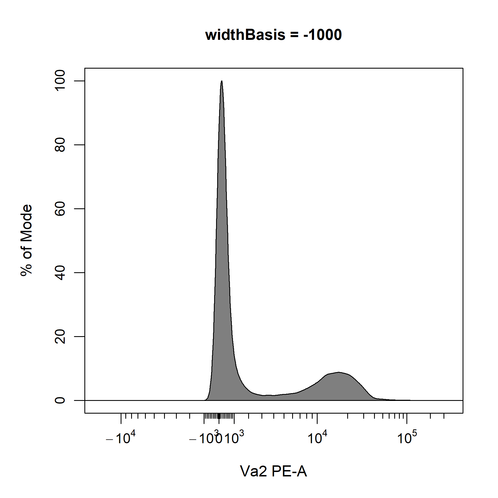

Data Transformations
Dillon Hammill
2020-06-19
Source:vignettes/CytoExploreR-Transformations.Rmd
CytoExploreR-Transformations.RmdIntroduction
Data transformations are essential for appropriately visualising cytometry data. This requirement for data transformations is due to the large dynamic range of cytometry data makes it difficult visualise both positive and negative events on a linear scale. As you can see below, the values for flow cytometry extend from 0 to 262144 which is an enormous range for fluorescent intensity values. Clearly, visualising the data on this scale is not going to allow us to identify discrete negative and positive populations.

To overcome this visulisation problem, traditionally cytometry data has been transformed using log transformations to improve visualisation and separation of negative and positive events into discrete populations. As you can see below, log transformations handle high fluorescent intensity values quite well, but struggle with values approaching zero. This results in these lower values being dumped on the lower end of the scale, which makes it appear as though the data contains three distinct populations based on fluorescent intensity. This problem is further highlighted when applying compensation to the data as it introduces more values that approach zero and below.

Recently, more sophisticated transformations such as the hyperbolic arcsine, biexponential and logicle transformations have been used to overcome the limitations of the log transformation. The result of applying these transformations using the default parameters to the Alexa Fluor 488 channel is shown below for easy comparison. As you can see, all the transformations seem to handle the higher fluorescent intensity values in a similar manner, but differ in their approach to dealing with values nearing zero. For flow cytometry data, the biexponential and logicle transformations seem to provide the best visualisation of the data as discrete negative and positive populations are clearly visible. It is important to note that the optimal transformation for each parameter is data-dependant and users should explore the different transformation types to obtain the best visualisation of the data. This process will be documented later in this vignette.

CytoExploreR has full support for log, arcsinh, biexponential and logicle transformations implemented in the flowWorkspace package. In this vignette we will demonstrate how CytoExploreR facilitates fine tuning of transformation parameters and how these optimised transformations can be applied cytometry data. For consistency with the RGLab suite of cytometry data analysis packages, CytoExploreR uses a series of wrapper functions to add support for these transformations with improved support for customisation. Below is a list of the key functions that you will encounter in this vignette:
-
cyto_transformer_logimplements theflowjo_log_transversion of the log transformation. -
cyto_transformer_arcsinhimplements theasing_Gml2version of the arcsinh transformation. -
cyto_transformer_bieximplements theflowjo_biexpversion of the biexponential transformation. -
cyto_transformer_logicleimplements theestimateLogicleversion of the logicle transformation. -
cyto_transformer_combinecombines individual transformation definitions into a single list of transformers that can be applied to the data usingcyto_transform. -
cyto_transformis capable of automatically computing transformers and is used to apply a set of transformers to the data.
Demonstration
To demonstrate the use of the transformation functions, we will need to download the Activation FCS files shipped with CytoExploreRData. If you have not already done so, these FCS files can be easily downloaded to a folder in your current working directory by following these steps:
# Load required packages library(CytoExploreR) library(CytoExploreRData) # Activation dataset Activation # Save Activation dataset FCS files to Activation-Samples folder cyto_save(Activation, save_as = "Activation-Samples")
Now hat we have the FCS files stored locally, let’s setup up the Activation GatingSet using
cyto_setup. It is recommended that experiment details be filled in at this point as this information can be used to easily select samples to use when customising transformations. If your computer struggles with applying the transformations, it is recommended that you set the restrict argument to TRUE in cyto_setup to restrict the data to only the parameters for which markers have been assigned. Although not required for this vignette, it is always a good idea to ensure that the data has been compensated prior to data transformations. The spillover matrices attached to each of the files can be applied using cyto_compensate.
# Activation GatingSet gs <- cyto_setup("Activation-Samples") # Apply compensation gs <- cyto_compensate(gs)
Next we will demonstrate the use of the different
cyto_transformer functions to obtain optimised transformation definitions for each of the fluorescent channels. These transformer functions will automatically pool the supplied data, apply the transformation using the specified parameters to the specified channels and plot the resultant transformed data using cyto_plot. The definition of the transformation can be altered by changing the arguments of the underlying flowWorkspace transformer function. It is important to note that these cyto_transformer functions do not apply these transformers to the data, they are purely used to optimise the transformers prior to applying the combined transformers to the data using cyto_transform. As a result, these cyto_transformer functions do not return the transformed data, but instead the transformer definitions that can be applied to the data using cyto_transform.
Batch Transform Fluorescent Channels
To make things a little easier, all these
cyto_transformer functions will automatically generate transformers for all fluorescent channels. To obtain transformers for a specific set of parameters. simply supply the names of these channels/markers to the channels argument. To use a specific subset of the data to visualise and customise the transformations, users can supply specific slection criteria to the select argument. Next we will explore each of these cyto_transformer functions to obtain transformation definitions for all the fluorescent channels. This provides a quick overview of all possible transformer types to identify those that provide the best visualisation of the data.
Arcsinh Transformation
# Default arcsinh transformer trans_arcsinh <- cyto_transformer_arcsinh(gs)

Biexponential Transformation
# Default biexponentail transformer trans_biex <- cyto_transformer_biex(gs)

Logicle Transformation
# Default biexponentail transformer trans_logicle <- cyto_transformer_logicle(gs)

Optimisation of Transformation Parameters
In the examples above, we showed how we can quickly apply different types of transformations to all the fluorescent channels to identify which transformation type to use for each fluorescent channel. Based on these plots, it seems as though the logicle transformation provides the best overall result when using the default settings. In my experience, I find the logicle transformation to perform consistently the best for flow cytometry data, and it often does not even require much optimisation. For the purpose of demonstration, I will therefore switch over to the biexponential transformations to show you how we can optimise these transformation parameters to better visualise the data. Based on the plots above (green) it seems as if we can improve the transformer definitions for the PE-A and 7-AAD-A parameters. Firstly, let’s remove the unwanted transformer definitions from
trans_biex which contains our transformation definitions for all the fluorescent channels.
# Remove PE-A & 7-AAD-A transformers trans_biex <- trans_biex[-match(c("PE-A", "7-AAD-A"), names(trans_biex))] # Check transformers have been removed trans_biex
Let’s spend some time optimising the biexponential transformation for the PE channel. Since the parameters for the transformers are defined in the flowWorkspace package, we will need to refer to that documentation to optimise the transformers. Running
?cyto_transformer_biex will open the help documentation that contains links to the relevant documents in flowWorkspace. After consulting these documents, it looks like we can use the widthBasis argument to fine-tune the transformation definition. The default value is set to -10, so let’s try changing this to -100 and -1000 to see if it improves the visualisation of the data.
# default PE transformer PE_biex <- cyto_transformer_biex(gs, channels = "PE-A", widthBasis = -10)

# PE transformer
PE_biex <- cyto_transformer_biex(gs,
channels = "PE-A",.
widthBasis = -100)
# PE transformer
PE_biex <- cyto_transformer_biex(gs,
channels = "PE-A",.
widthBasis = -1000)
Based on these plots and our understanding of the underlying biology, it looks like a widthBasis of -100 will provide a decent visualisation of the data. Before we can apply our transformers to the data. We will need to combine our transformers into a single list of transformers using
cyto_transformer_combine.
# PE transformer
PE_biex <- cyto_transformer_biex(gs,
channels = "PE-A",.
widthBasis = -100)
# Combine transformer definitions
trans <- cyto_transformer_combine(trans_biex,
PE_biex,
trans_logicle["7-AAD-A"])
# All transformer definitions
transApply Manually-Optimised Transformers to Data
The complete list of transformers can be applied to the data using
cyto_transform. It is important to optimise the transformers before using cyto_transform as it is not currently possible to inverse the transformations applied to a GatingSet.
# Apply transformers to data gs <- cyto_transform(gs, trans = trans)
Apply Default Transformers to Data
cyto_transform can also apply batch transformers to the data using the flowWorkspace defaults. Simply indicate the type of transformation to apply through the type argument and cyto_transform will make a call to the relevant cyto_transformer function to obtain the transformer definitions using the defaults in flowWorkspace. These transformers will then be applied to the data within cyto_transform and the transformed data will be returned. It is important to note that transformer definitions cannot be customised on a per channel basis using this method. For this reason, it is recommended that the transformer definitions be optimised using the cyto_transformer functions prior to apply them to the data using cyto_transform.
# Activation GatingSet gs <- cyto_setup("Activation-Samples") # Apply compensation gs <- cyto_compensate(gs) # Apply transformers gs <- cyto_transform(gs, type = "logicle")
Summary
Data transformations are essential to appropriate visualisation of cytometry data. CytoExploreR inherits support for the log, arcsinh, biexponential and logicle from the flowWorkspace package. Transformation parameters can be optimised using a
cyto_transformer function, by altering the parameters in the underlying flowWorkspace function. Transformers can be applied to the data using cyto_transform. cyto_transform is also capable of applying batch transformers using the default flowWorkspace parameters. Flow cytometry users must remember to always apply the data transformations post compensation.